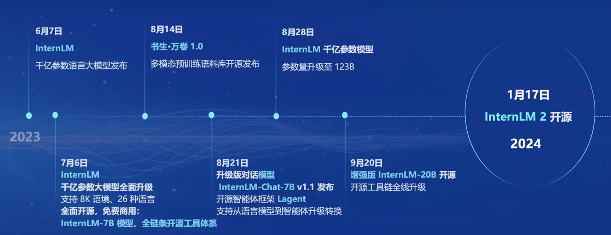
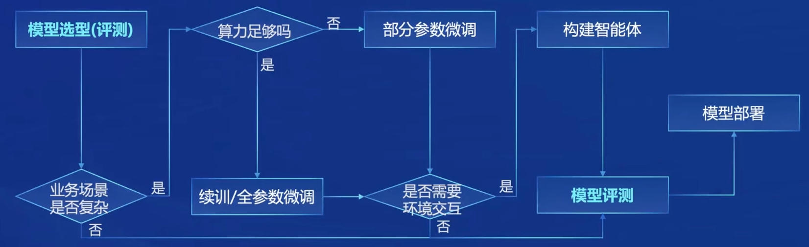
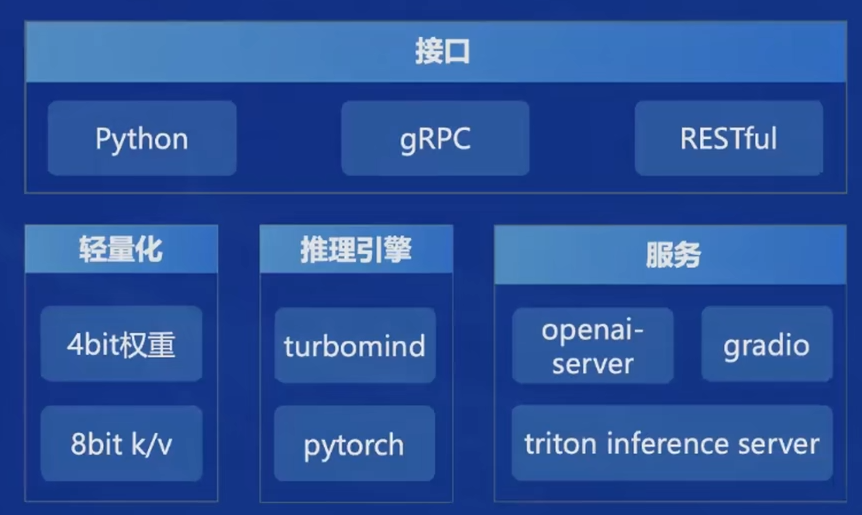
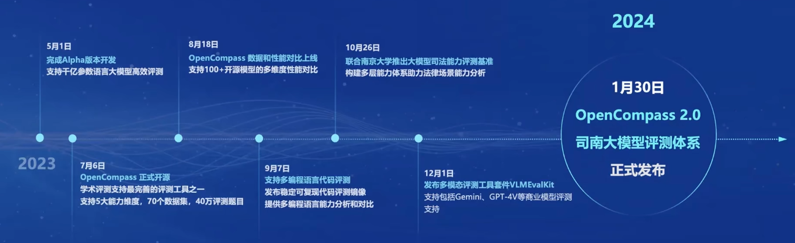
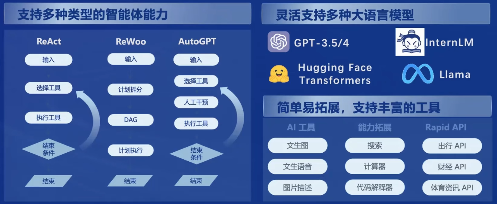

InternLM实战营第一章笔记
大模型成为发展通用人工智能的重要途径
大模型一般分为专用模型与通用大模型
专用模型
针对特定任务，一个模型解决一个问题
通用大模型
一个模型应对多种任务、多种模态
书生·浦语大模型
InternLM 是在过万亿 token 数据上训练的多语千亿参数基座模型。通过多阶段的渐进式训练，InternLM 基座模型具有较高的知识水平，在中英文阅读理解、推理任务等需要较强思维能力的场景下性能优秀，在多种面向人类设计的综合性考试中表现突出。在此基础上，通过高质量的人类标注对话数据结合 RLHF 等技术，使得 InternLM 可以在与人类对话时响应复杂指令，并且表现出符合人类道德与价值观的回复。
书生·浦语大模型开源历程

书生·浦语2.0的体系
模型体量
7B
轻量级，并且性能也不错。
20B
综合性能更强，可以支持更加复杂的场景。
模型版本
InternLM-Base
模型底座，是模型适配的起点
InternLM
在Base的基础上，在多个方向进行了强化，评测成绩优秀，也保持了很好的语言能力。
InternLM-Chat
在Base的基础上，面向对话交互进行了强化，有很好的对话能力。
主要亮点
超长上下文
综合性能全面提升
综合实力达到同量级开源模型的领先水平，InternLM-Chat-20B甚至能和GPT-3.5比肩。
优秀的对话和创作体验
工具调用能力整体升级
工具调用能拓展大语言模型的能力边界，InternLm2进一步升级了模型的工具调用能力，能更加稳定的进行工具筛选和多步骤规划，完成复杂任务。
突出的数理能力和使用的数据分析功能
InternLm2在不依靠外部工具的情况下，100以内的计算能够达到100%的准确率，1000以内的能达到80%的准确率。
代码解释器
配合代码解释器，InternLm2能够进行更加高难度的数学运算。
从模型到应用
典型流程

书生·浦语全链条开源开发体系
数据
书生万卷1.0
文本数据1TB，图像-文本数据140GB，视频数据140GB。
书生万卷CC
跨2013-2023，从90个dumps的1300亿份原始数据中提取1.38%的内容，并且在毒性、色情、个人隐私方面都进行了安全加固。
预训练
支持从8卡到千卡训练，千卡训练加速效率提高92%；兼容各种主流的技术生态；支持多种语言模型，开箱即用。
微调
增量续训
让基座模型学习一些新知识，训练数据通常为文章、书籍或代码。
有监督微调
让模型学会学会理解各种指令对话，或者注入少量专业知识，训练数据通常为高质量的对话。
XTuner
有多种微调算法，覆盖各种SFT场景；支持加载HuggingFace等模型或数据集；能够自动优化加速，开发者无需注意细节。
训练方案支持NVIDIA20系以上的所有显卡，最低8GB显卡就可以微调7B模型
部署
LMDeploy
提供大模型在GPU上部署的全流程解决方案，包括模型轻量化、推理和服务。

评测
评测体系发布流程

OpenCompass
获得Meta官方推荐，是唯一的国产大模型评测体系，社区支持最完善的评测体系之一
CompassRank
中立全面的性能榜单
CompassKit
大模型评测全栈工具链
CompassHub
高质量的评测基准社区
应用
智能体框架
Lagent 轻量级智能体框架

AgentLego 多模态智能体工具箱
提供了大量视觉、多模态相关领域的前言算法，支持多个主流智能体系统。